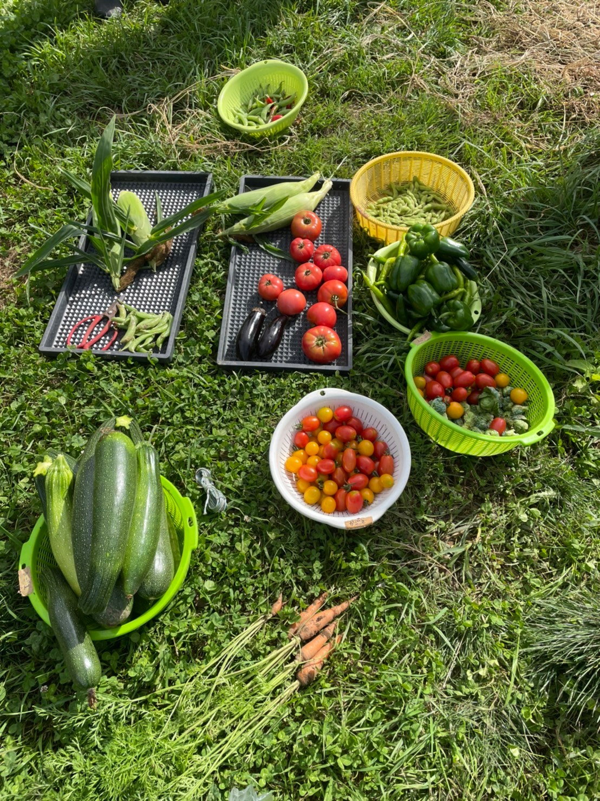
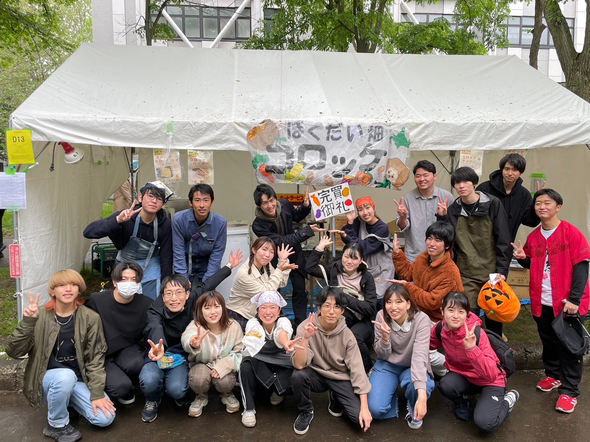
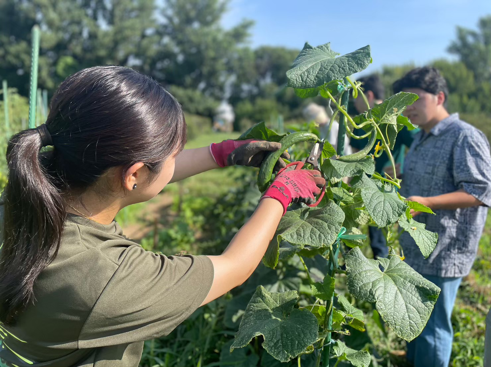
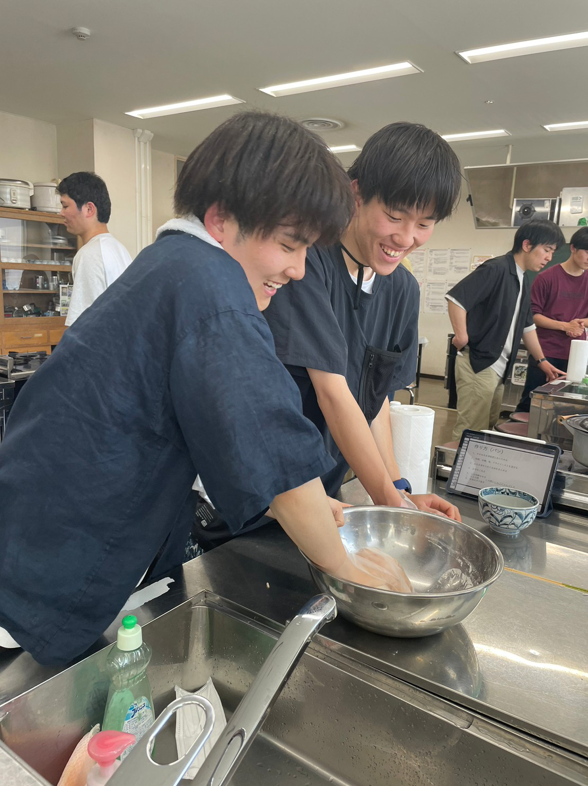
 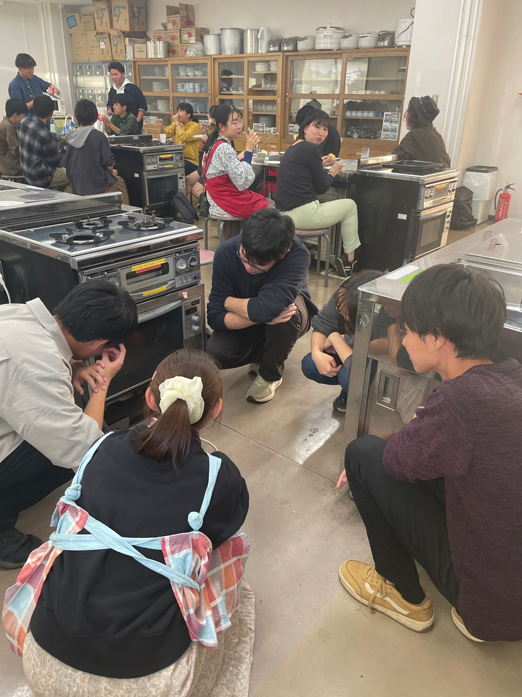
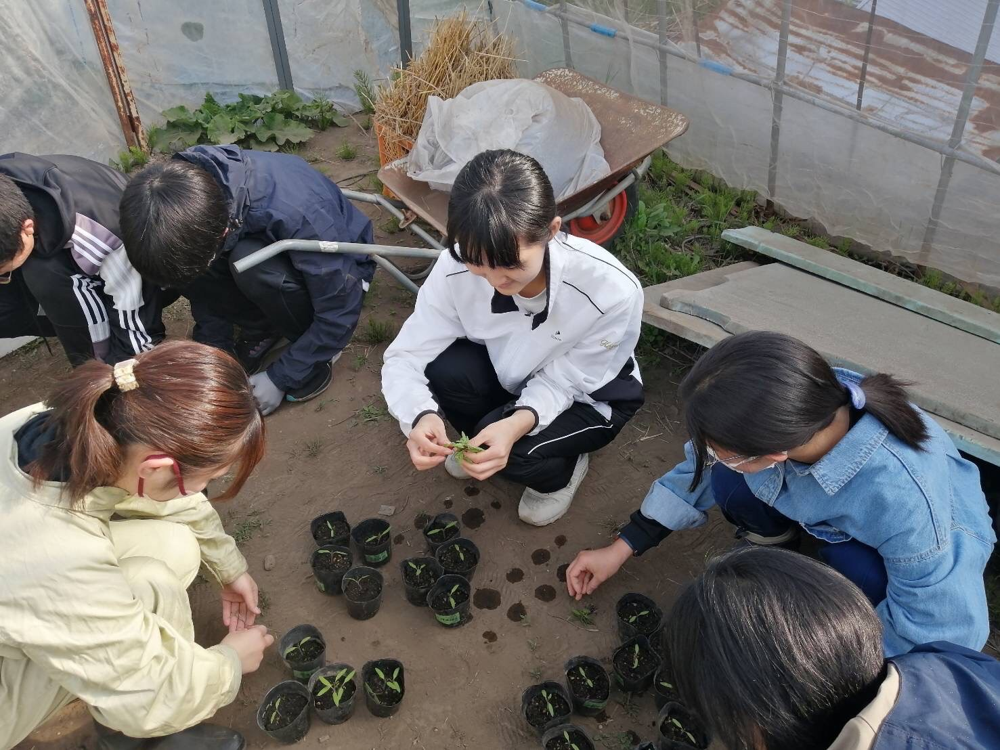
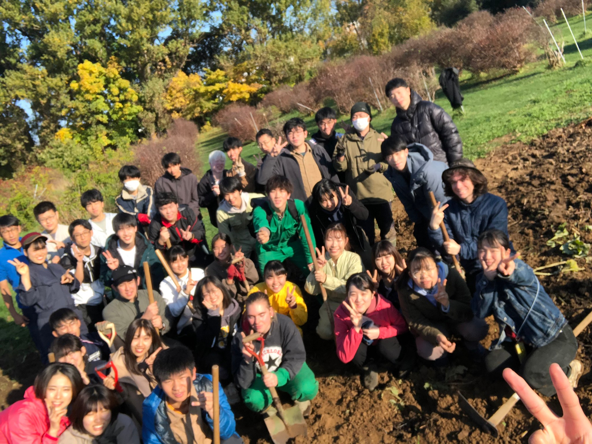
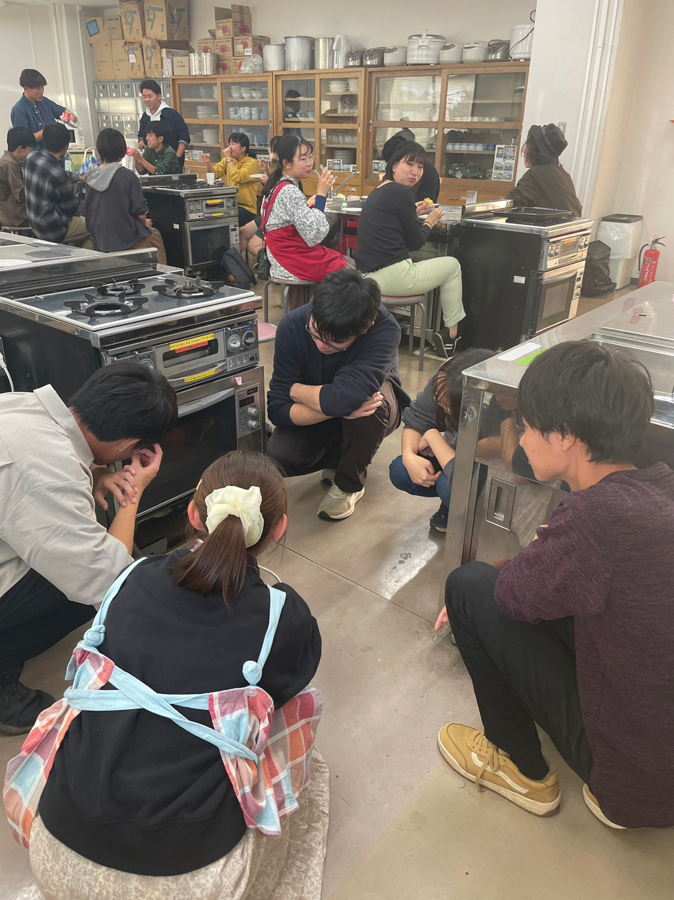
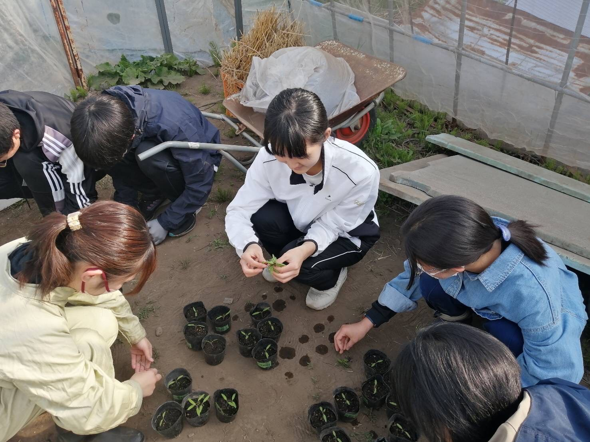
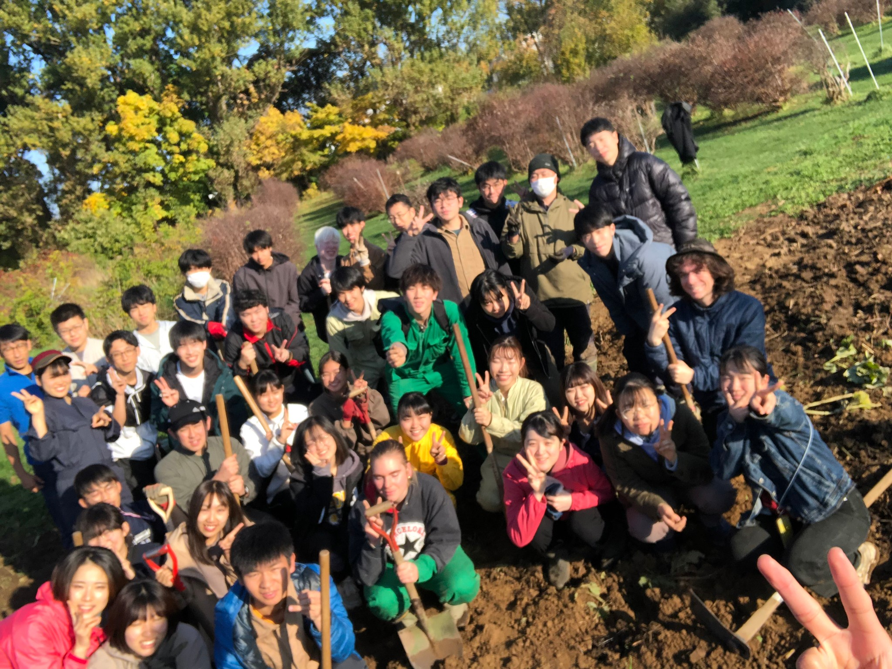
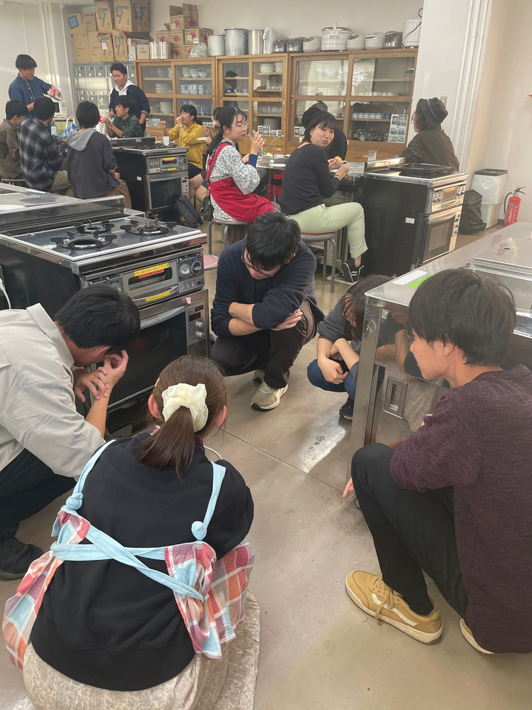
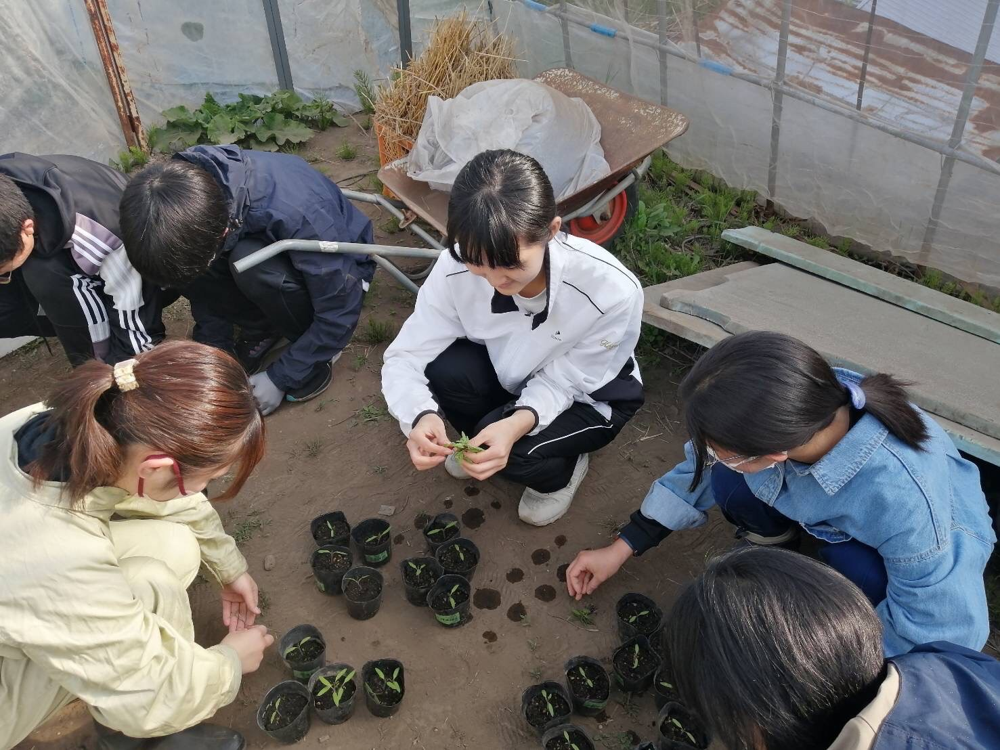
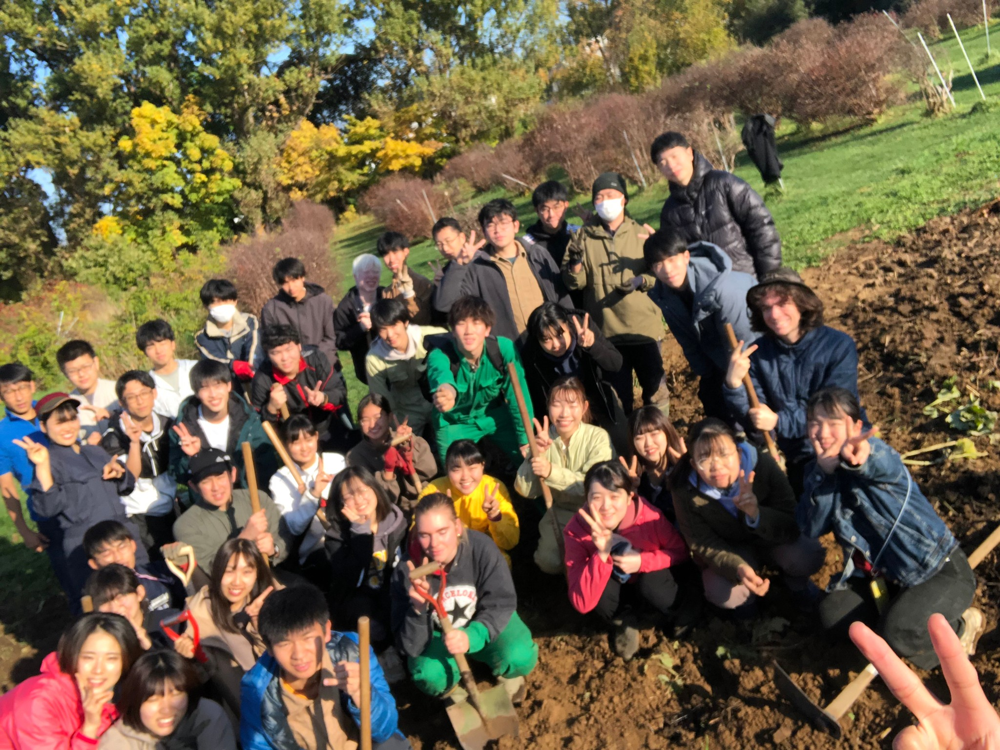
わたしたちについて
ほくだい畑はどんなサークルかと端的にいうと、北大構内の畑で野菜を育てるサークルです。畑を耕す耕耘という作業から、種まき、収穫、その後の加工、消費までを学生だけで行っています。
現在サークルには多くの学部の人が参加しています。なので、農学部じゃないけど入っていいのかなと不安がる必要もありません！！農学部の人もそうでない人も大歓迎です♪一緒に農業について学んでいきましょう。
活動の様子はこちら
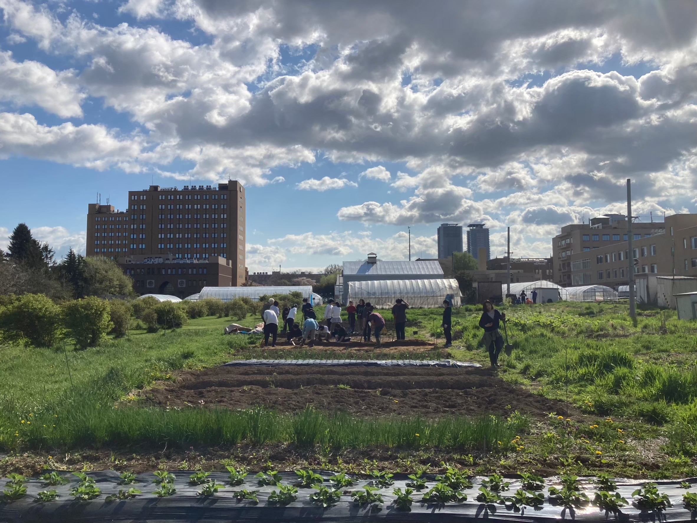
年間イベント
4月 フォトコンテスト開幕
ここは、1つ目のアコーディオンの中身です。
ほくだい畑すごろく
ここは、2つ目のアコーディオンの中身です
６月 北大祭出店
ここは、3つ目のアコーディオンの中身です。
2024年度 栽培野菜
| ナス |
里芋 |
ソラマメ |
白菜 |
ズッキーニ |
タマネギ |
|---|---|---|---|---|---|
| トウモロコシ |
ジャガイモ |
トウガラシ |
スイカ |
小ネギ |
ナガイモ |
| カボチャ |
ピーナッツ |
トマト |
メロン |
||
| サツマイモ |
ブロッコリー |
キャベツ |
ピーマン |
パプリカ |